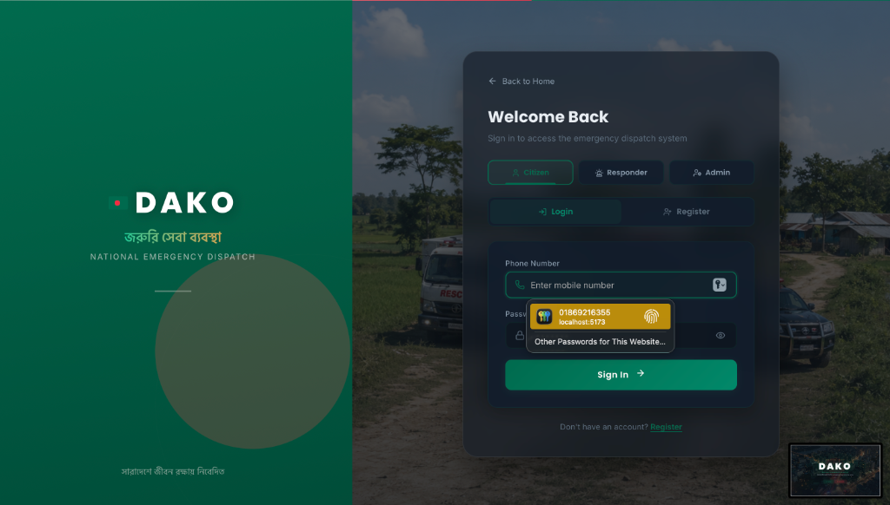

> ./view_project.exe --id=dako
DAKO
Real-time Emergency Dispatch System
Java — Spring Boot — React


🟢 THE PROBLEM & SOLUTION
The Problem: Traditional emergency dispatch systems often rely on slow, manual radio communications and phone calls. Precious minutes are lost determining the user's exact location and finding the nearest available emergency unit.
The Solution: Dako is an Uber-like emergency dispatch system built for scalability and modularity. It connects users in distress with the nearest police, fire, or ambulance services. Powered by a robust Java Spring Boot backend and a React frontend, it features core dispatch and assignment logic designed to drastically reduce response times.
🟡 TECH STACK
Java 25
Spring Boot 4.x
React
Gradle
🔴 CORE ARCHITECTURE & FEATURES
-
Modular Service Domains: Clean architectural separation of distinct emergency sectors including ambulance, fire service, and police response operations.
-
Core Dispatch Logic: Advanced routing and assignment algorithms functioning similarly to modern ride-hailing applications (Uber-like) for rapid responder allocation.
-
Robust Security & Auth: Comprehensive user authentication and management layered within the Spring Boot framework to ensure secure access.
-
Modern Frontend Infrastructure: A seamless, scalable user interface built entirely with React and Node.js-based dependency management.